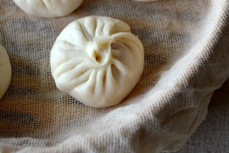

Step 4
In a metal steamer pot or wok, boil water. If using a wok, put the water at a level so that when you put the bamboo steamer into the wok, the water rises about 1/2 inch up the bottom of the bamboo base. You never want the water to touch the dumplings inside, though, so make sure not to fill it too high! But make sure not to fill it too low either, because if all the water evaporates, you could end up burning your bamboo steamer.
In a metal steamer pot or wok, boil water. If using a wok, put the water at a level so that when you put the bamboo steamer into the wok, the water rises about 1/2 inch up the bottom of the bamboo base. You never want the water to touch the dumplings inside, though, so make sure not to fill it too high! But make sure not to fill it too low either, because if all the water evaporates, you could end up burning your bamboo steamer.